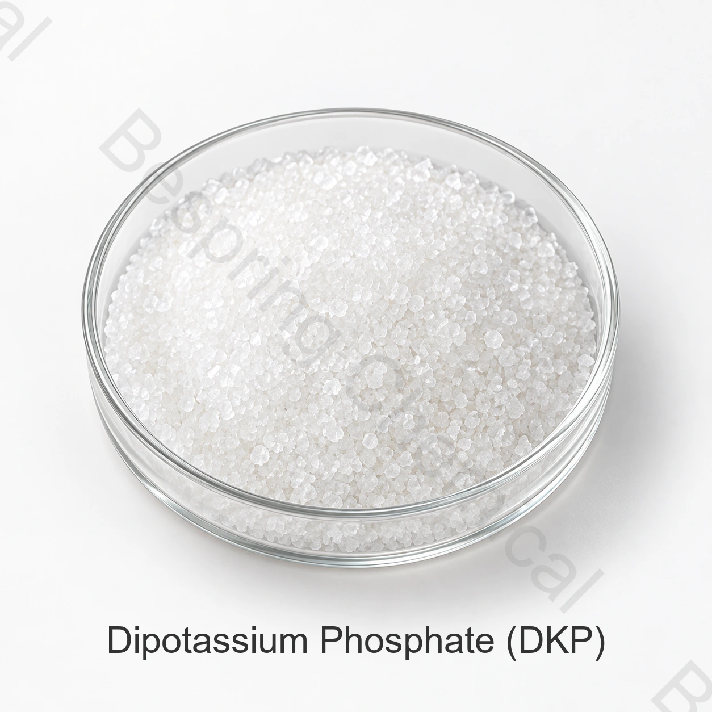

Product identity and grade
State the exact identity, grade, guaranteed nutrient analysis, form, application, quantity, packing and destination.
Fertilizer grade · Phosphate fertilizer salt · DKP
Dipotassium phosphate is a water-soluble alkaline phosphorus and potassium salt considered for specialty nutrient formulations where its exact hydration state and pH effect are suitable.

Product image · confirm grade and packaging when ordering
Share guaranteed analysis, form, fertilizer use, quantity, destination and documents.
GradeFertilizer application
SpecificationAvailable privately from sales
QualificationAnalysis and trials required
ComplianceLabel and market specific
Direct product answer
Dipotassium phosphate is a water-soluble alkaline phosphorus and potassium salt considered for specialty nutrient formulations where its exact hydration state and pH effect are suitable.
No universal fertilizer grade is implied by the abbreviation DKP Chemical identity alone does not establish fertilizer grade, nutrient guarantee, solubility, crop suitability or market registration. Compare the offered source against the required label and agronomic program.
Procurement checklist
Compare the offered grade, application requirements and commercial terms before requesting a sample or placing an order.
State the exact identity, grade, guaranteed nutrient analysis, form, application, quantity, packing and destination.
Compare source-specific specification, nutrient declaration, current COA, packing, Incoterm and delivery window.
Where relevant, confirm solubility, insolubles, source-water compatibility, stock concentration and crop program.
Request SDS, private specification or TDS, representative COA, batch COA, traceability and destination-market files.
Application screening
These are qualification areas, not universal crop recommendations, nutrient rates, label approvals or guaranteed agronomic outcomes.
Evaluate DKP where the complete formulation calls for its potassium-phosphate composition. Use a current source specification for the nutrient balance.
Test the required pH behavior in the full concentrate. Include storage time, temperature and other mineral salts.
Have the agronomist define the nutrient target and acceptable solution chemistry. Validate the complete program for the crop and system.
Confirm handling and compatibility with the other ingredients. A soluble raw material still requires validation in the final fertilizer.
Technical selection
Specify the exact dipotassium phosphate form and assay. Confirm the analytical basis before comparing potassium and phosphorus contributions.
Request the offered grade's P2O5 and K2O analysis and relevant fertilizer documentation. Do not derive a commercial guarantee from a formula alone.
Measure solution pH and compatibility at the intended concentration. Review the complete salt mixture, source water and precipitation risk.
Define why the formulation needs this alkaline phosphate rather than another phosphorus source. Obtain local agronomic and market qualification for the proposed use.
Private technical documentation
Bespring Chemical does not publish product specifications for this fertilizer raw material online. Contact sales for the current source-specific specification or TDS and confirm its revision, analytical methods and acceptance criteria.
Request the signed current specification or TDS, SDS, test methods, representative COA and batch COA.
Confirm guaranteed analysis, expression basis, labeling, fertilizer registration, trace elements and destination requirements.
Review FAO plant-nutrition guidance, FAO fertilizer specifications guidance and NIH PubChem chemical records. Agronomic suitability and fertilizer registration remain crop, soil, formulation and jurisdiction specific.
Agronomic note: This supplier page does not prescribe nutrient rates or establish crop suitability. Base fertilizer selection and application on soil, water and tissue data, qualified agronomic advice, compatibility testing, the approved label and local environmental requirements.
Storage and handling
Fertilizer buyer questions
Dipotassium phosphate is a water-soluble alkaline phosphorus and potassium salt considered for specialty nutrient formulations where its exact hydration state and pH effect are suitable. Use should follow soil or tissue testing, crop recommendations and applicable fertilizer rules.
No universal fertilizer grade is implied by the abbreviation DKP. Request the current source-specific guaranteed analysis and confirm whether nutrients are expressed as N, P2O5 and K2O or on another legally required basis.
Bespring Chemical does not publish fertilizer product specifications online. Contact sales for the current source-specific specification or TDS, analytical methods and representative COA.
No grade is established by the chemical name alone. Fertilizer, food and technical products have different intended uses, documentation, impurity controls and regulatory requirements.
Provide the exact identity and form, required guaranteed analysis, fertilizer application, quantity, packing, destination, registration documents, Incoterm and delivery date.
Content updated 2026-09-13.
Related sourcing
Browse the fertilizer-grade phosphate and potassium salt portfolio.
Discuss a private specification, documents, sample and commercial requirements.
Review sourcing and export support for international chemical procurement.
Application and selection guides: Foliar Phosphorus & Potassium with MKP; Greenhouse Fertilizer Stock Tank Compatibility; Water-Soluble Fertilizer Raw Material Quality. Use the guides for process questions; confirm the exact supplied grade separately.
Specification-led fertilizer sourcing
Share guaranteed analysis, grade and form, fertilizer application, critical limits, quantity, packing, destination and document list.
Tell us your grade and destination market so we can confirm which documents are available for your order.
An external reference is not a batch certificate or a Bespring product specification.